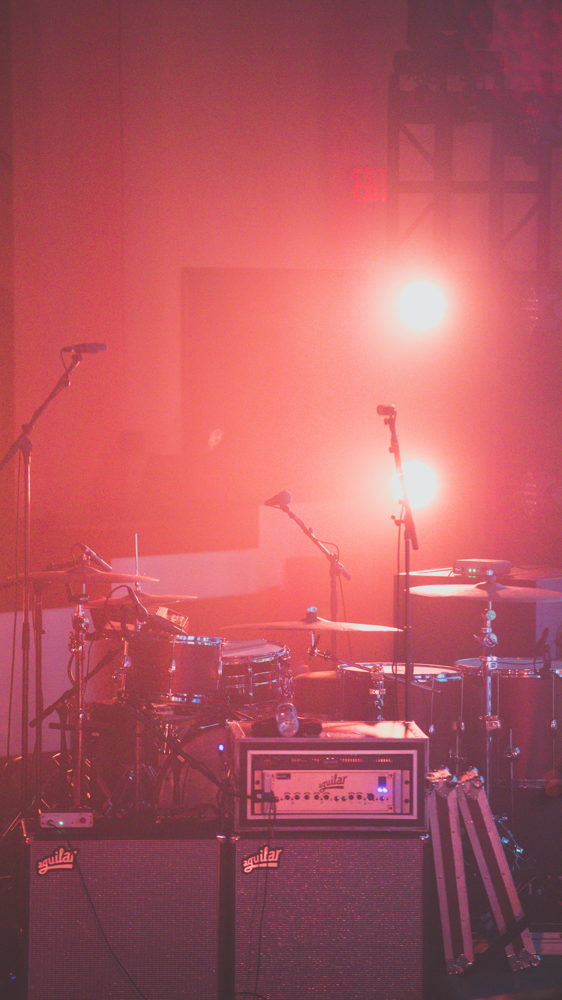
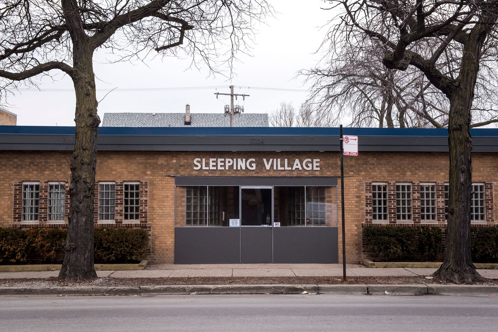

Here are a few small and medium size independent venues in different areas of the city.
Small Venues
Constellation
Constellation is located in the Lakeview neighbourhood. It brings in progressive and experimental musicians, ranging from jazz, improvisation, and classical music.

Schubas
Schubas is located in the Lakeview neighbourhood and has been hosting live music events for more than 80 years.
The Hideout
The Hideout is located in the Wicker Park neighborhood. It seems small, but it is a great place to visit for unique music events and community events. It has been hosting eclecting and experimental concerts since the 1930s.

Medium Venues
Sleeping Village
Sleeping Village is located in the Avondale neighborhood. During the day it is a cafe and at night it is a bar and venue. They host a variety of events and genres.

Lincoln Hall
Lincoln Hall is located in the Lincoln Park neighborhood. It is well known for its pop and rock shows.


Empty Bottle
The Empty Bottle is an indie rock venue located in the West town neighborhood. It is known for hosting cheaper shows and has lots of city regulars.